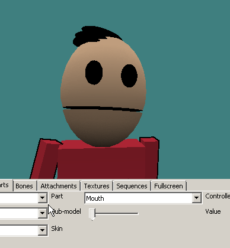

GoldSrc Mouth Procedural Animation Tutorial
INTRODUCTION
GoldSrc uses a bone controller to turn audio waveforms into bone rotations. This is how all the scientists and barneys "talk". The louder the audio the more the jaw bone rotates (within specified limits). This works for NPC's and Playermodels such as Counter-Strike 1.6 & Sven Co-op 5.0. NOTE: in this current form this tutorial only covers the controller code/testing and not skinning procedure; this assumes you know 3D skinning.
METHOD
1) Create a bone on your reference model parented to the head bone and then skin the jaw mesh to it. Call the bone "mouth".
2) Add to your model QC the mouth controller and put it with the other model animation controllers in your QC code. The most common type is "ZR" which is Z bone rotation. My qc controller line looks like this:
$controller mouth "mouth" ZR 0 50
You can also use "XR" & "YR" if you want different axis. Note that the controlled bone moves in the orientation of the parent bone and not the mouth bone. Because of this, if you need a direction that isnt working you can add a bone before the mouth and use that as your alignment.
3)Compile the model and test in HLMV by fiddling with the controller on the body parts tab. As you can see, my QC value range was too high as his jaw clips into his chest so I should dial it back from 50.
4)To test locally alone, select your playermodel, start a map and do this in console:
thirdperson
cam_idealdist 128
cam_idealyaw 180
cam_idealpitch -30
move your mouse into position
voice_loopback 1
then push-to-talk and scream into your mic

You are also not limited to rotational direction, as you can use a linear direction by just using X, Y, or Z. here is a demonstration of using X controller:
$controller mouth "mouth" X 0 10
(again, if you cannot get the direction you desire use an inbetween different orientation parent alignment bone before mouth)

This concludes the tutorial.